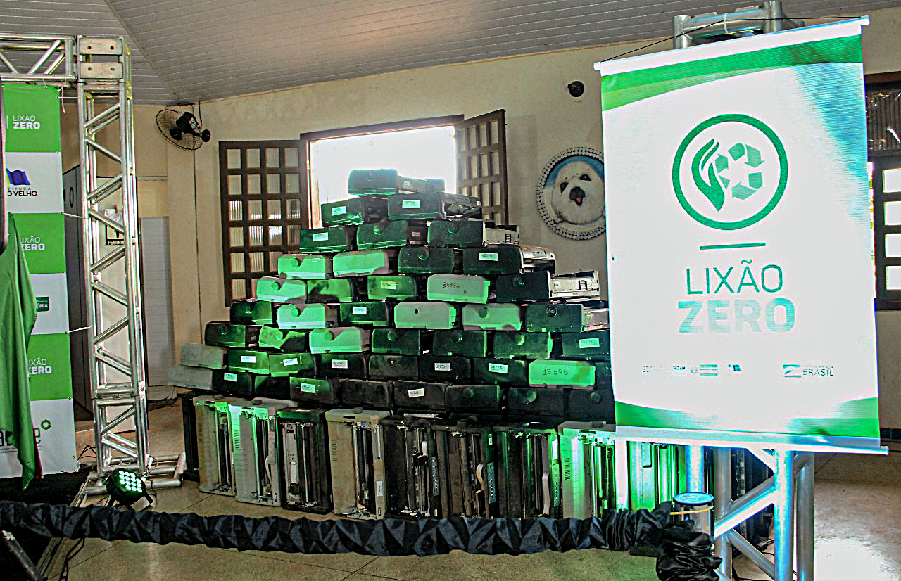

Quem somos nós
A Recycla faz Reciclagem de Eletrônicos iniciou suas atividades em 1993, e se orgulha em oferecer um serviço de confiança para pessoas e empresas que, como nós, acreditam em um mundo mais sustentável e buscam efetivamente promovê-lo. Fazemos isto por meio de nossos serviços de Coleta e Destinação de Resíduos Eletrônicos, em toda Curitiba e Região Metropolitana, atendendo às normas legais e certificadoras vigentes e praticando a melhoria contínua em todo o nosso Sistema de Gestão de Qualidade, buscando corresponder às melhores expectativas de satisfação de nossos colaboradores, fornecedores e clientes.